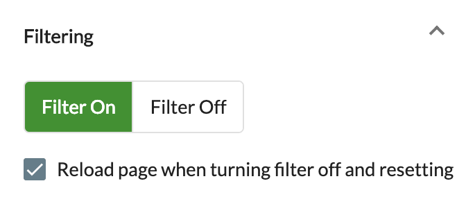
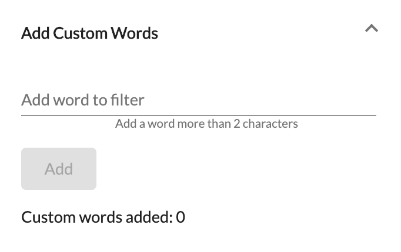

Filter bad words from the websites that you and your children are visiting. Use the Four Letter Filter to mask unwanted bad words from popular social media like Facebook and Twitter, and filter foul language from any web site or web search result.
The Four Letter Filter removes over 425 bad words and word derivations found on the web. It will attempt filtering static content (plain old web page), dynamic content (like social media sites), and pages within pages (aka, iframes). You can even add custom bad words to filter!
Click the Filter On button and the Four Letter Filter will be immediately applied to the existing web page as well as every new page that you visit going forward.

Note: When turning the filter off you'll need to refresh the page(s) that are currently open to see unfiltered bad words. For the current page, simply keep the Reload page when turning filter off checkbox selected to refresh the page.
Disclaimer: People are creative, and bad words can be a cultural phenomena. This plugin will attempt to mask them from your web pages but may not catch all derivations. Images, Videos, PDF's, and types of media other than plain text cannot be filtered.
Add any words that you think should be filtered. Add one word at a time, without spaces or punctuation. Use the reset button to remove custom words.

Choose the replacement for the bad word. This will leave the context of the web page intact while removing the bad words so you don't have to read them.
Stats are a handy way to see how many words have been filtered since the last reset as well as the number of custom words you have applied. Additionally, you can see when the last filtered occurred, and when filtering was last turned on (installed or reset).
Use the reset button to set everything back to the default settings. This will remove any custom words you have added.
©2019 David L Smith
Attribution: Photograph by Lars Ploughmann